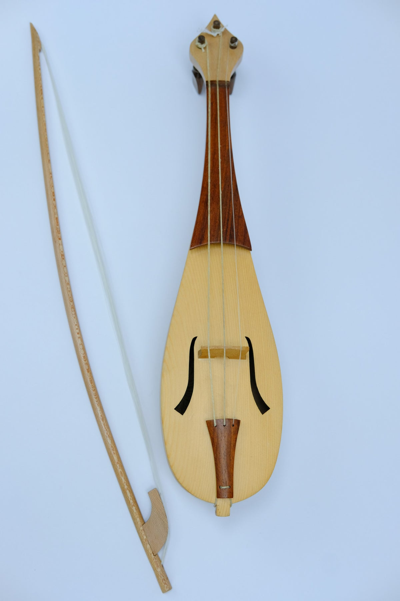

Los antecesores del violin

Rebec, uno de los antecesores del violin
Antes de la aparicion del violin existieron varios intrumentos de cuerda que influyeron en su creacion. Entre ellos destacaba el rebec y la lira da braccio, utilizados en Europa durante la Edad Media y el Renacimimento.
El nacimiento del violin

El violin aparecio en el norte de Italia durante el siglo XVI. Su diseño permitio obtener un sonidomas potente y brillante que el de muchos intrumentos anteriores, por lo que rapidamente gano popularidad.
Cremona: La cuna del violin

La ciudad de Cremona, Italia
La ciudad italiana de Cremona se convirtio en el centro mas importante para la construccion de violines. Alli trabajaron algunos de los luthiers mas famosos de la historia, estableciendo las bases del instrumento moderno.